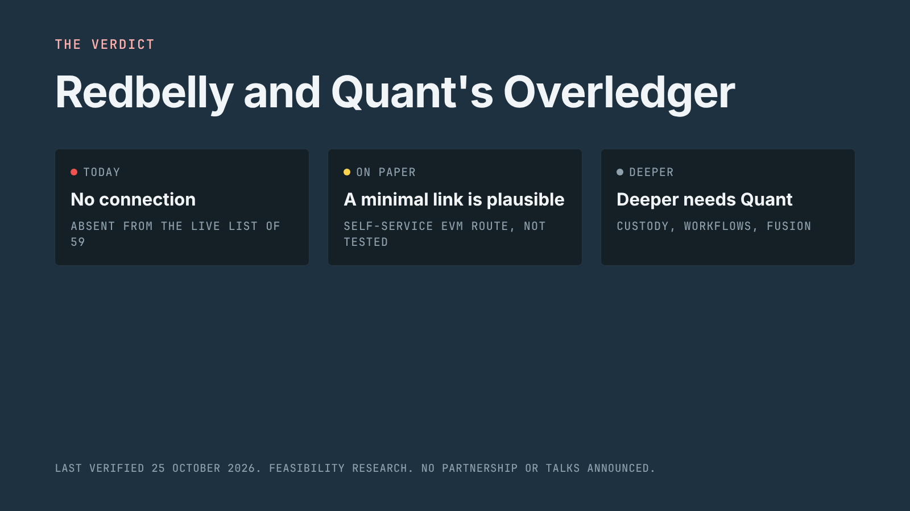
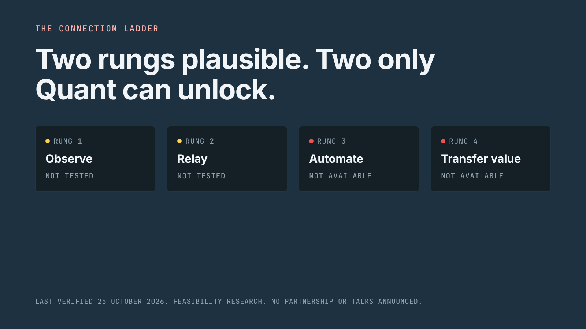
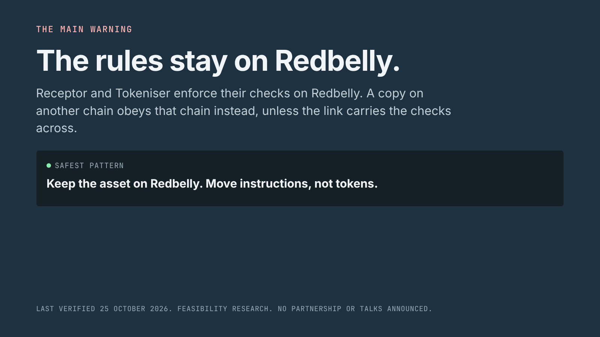

For the community
Redbelly and Quant's Overledger, in plain words
A plain language summary of the full report, ready to share. Every fact links to its source.
Research, not news. No partnership or talks between Redbelly and Quant have been announced. No price talk, no investment advice.
Research, not an announcement. No partnership or talks between Redbelly and Quant have been announced S48, and Redbelly has not published a view on bridging S48. What follows is not a plan, not a forecast and not investment advice.
Why the topic came up. In September 2026 The Clearing House chose Quant to run the interoperability layer of its On-Chain Money Initiative, a tokenised deposit network for US banks that TCH expects to open in the first half of 2027 S01. Of Quant's products, Overledger is the one documented for attaching blockchains S05.
Is Redbelly on Overledger now? No. Overledger's documentation never mentions Redbelly S07S11. We also logged in with an Overledger account and read the live network list: 59 networks, nearly all of them test networks, and no Redbelly among them S50.
Could it be added? Possibly, at the simplest level. Any Overledger account may add a new EVM network on its own S07, Redbelly runs the EVM S23, and Ankr, one of Overledger's approved node providers, already hosts a Redbelly endpoint S07S21. That would let Overledger read Redbelly and forward transactions that verified Redbelly users have signed themselves. Nobody has tried it yet, and Quant decides whether a chain where anyone can read but only verified users can write belongs on that self-service route S06S07.
What our tests turned up. A transaction from a fresh, unverified wallet was rejected, which is how Redbelly is meant to work S49. Redbelly does not answer net_version, a method Overledger keeps for older wallets and tools S11, and Permit2, which Overledger's payment feature needs, is not deployed on Redbelly S49S12. Each of these is a small item an engineer would have to look at.
What only Quant can unlock. Keys held by Quant, Overledger's workflow apps and moving value through Quant's Fusion Rollup would all need Quant to support Redbelly first S09S11S12. None of them works today.
What institutions could get. Teams already on Overledger would reach Redbelly through the login and API they already use S05, and could make a step on another network wait for an event on Redbelly S12S14. Redbelly's strengths, namely verified counterparties, final settlement within seconds and fees fixed in US dollars, would not change S22S24S25.
The main warning: the rules stay on Redbelly. Receptor credentials and Tokeniser's rules are enforced on Redbelly when an asset moves S17S40. If a copy of the asset is created elsewhere, that chain's rules apply instead, unless the link is built to carry Redbelly's checks along. The lowest-risk pattern keeps the asset on Redbelly and sends only instructions.
Still open. Whether Overledger's mainnet shows a different list, how Quant would classify Redbelly, whether Overledger's node health check would accept Redbelly, whether TCH's bank network will ever link to a public chain, and whether Receptor checks could run on other chains.
The full study, every source and the scripts that re-check each claim are in the repository.
Sources for this summary
- S01 The Clearing House Partners with Quant to Advance the On-Chain Money Initiative. https://www.theclearinghouse.org/payment-systems/Articles/2026/09/The-Clearing-House-Partners-with-Quant-to-Advance-the--On-Chain-Money-Initiative
- S05 Start Here (Overledger documentation). https://docs.overledger.dev/docs/start-here
- S06 Overview (Overledger documentation). https://docs.overledger.dev/docs/overview
- S07 Connectors (Overledger documentation). https://docs.overledger.dev/docs/connectors
- S09 Signing (Overledger documentation). https://docs.overledger.dev/docs/signing
- S11 Fusion Rollup (Overledger documentation). https://docs.overledger.dev/docs/fusion-rollup
- S12 Flow Apps (Overledger documentation). https://docs.overledger.dev/docs/flow-apps
- S14 Subscribe to a specific contract event signature (Overledger API reference). https://docs.overledger.dev/reference/subscribeevent
- S17 Proof by Query (Redbelly documentation). https://docs.redbelly.network/pages/methods/proof-by-query/
- S21 Redbelly Network environments (Vine developer portal). https://vine.redbelly.network/environments/
- S22 DBFT and super block: security, finality and scalability (Vine). https://vine.redbelly.network/consensus/
- S23 EVM compatibility (Vine). https://vine.redbelly.network/consensus/evm-compatibility/
- S24 Network fees (Vine). https://vine.redbelly.network/network-fees/
- S25 Identity and participation on the network (Vine). https://vine.redbelly.network/identity/
- S40 Tokeniser technology. https://tokeniser.com/technology
- S48 TASK-29 brief: Quant Overledger and Redbelly Interoperability Research. https://taskboard.redbellydao.network/tasks/TASK-29
- S49 Live checks against Redbelly RPC and the Overledger gateway (this report). evidence/live-checks.json
- S50 Account-level checks through an Overledger account (this report). evidence/overledger-account-checks.json
X thread
8 posts. Each fits in 280 characters, counting links the way X does.
Share cards
1600 by 900 images for X, in the DAO brand, each carrying a dated "last verified" line.


